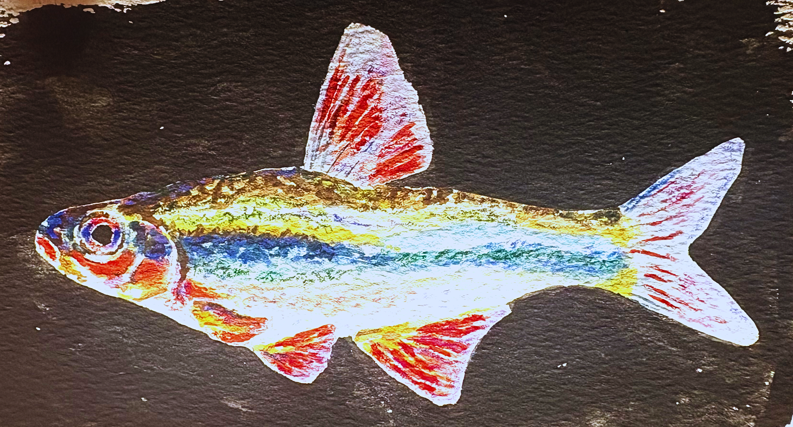
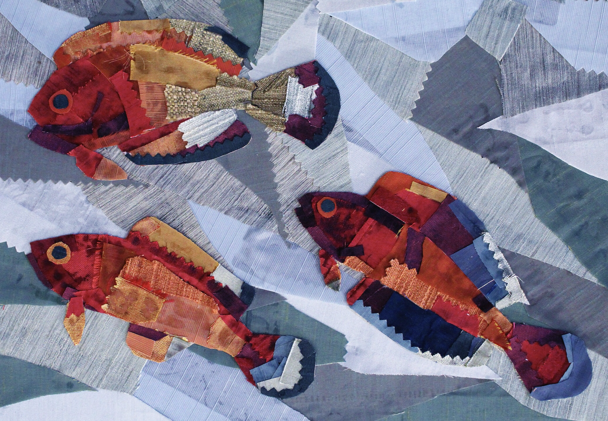
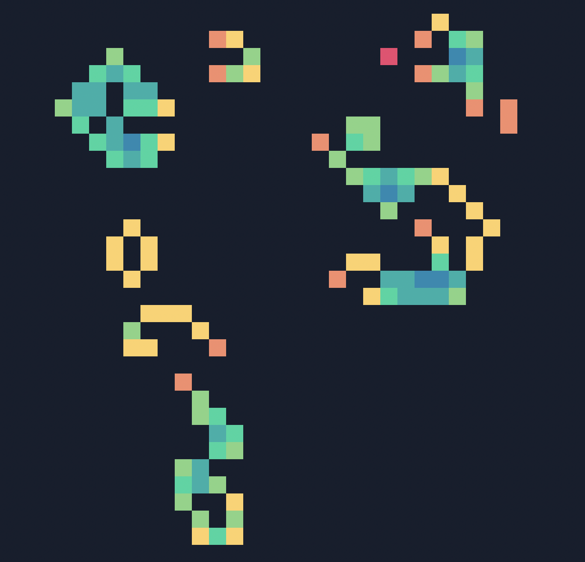
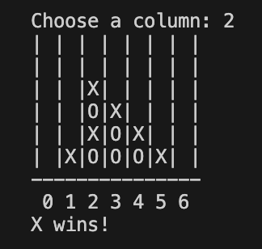
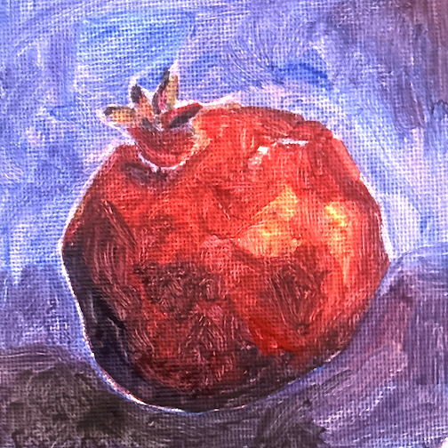

At the moment I am...

Hi! I'm a first year at Harvey Mudd College pursuing a joint major in Computer Science and Mathematics. I am passionate about numbers and using data to solve complex problems.
Currently, I'm working in the FICUS Lab researching machine learning capabilities for air quality and climate. I am part of the leadership team for Adaptive Design at Mudd, where we develop products to increase accessibility for individuals with disabilities.
Previously, I interned for Clean Properties Engineering, performed computational research understanding how the Monsoon Season in South Asia impacts the frequency and magnitude of earthquakes in the Himalayan region, and interned at Boston College's Seismic Observatory.
When I'm not coding, you can find me playing Minesweeper. I love painting, potatoes, and movies.

An interactive Python implementation of Conway's Game of Life with a colorful tkinter GUI and terminal visualization. Features clickable cells to create custom patterns, spacebar pause/resume controls, and gradient coloring based on neighbor count. Includes pre-loaded patterns like gliders and oscillators to demonstrate emergent complexity.
GitHub
A Python Connect Four game with an intelligent AI opponent that strategically evaluates moves by looking ahead to block wins, create winning opportunities, and maximize positional advantage. The AI scores potential moves based on 2-in-a-row, 3-in-a-row, and 4-in-a-row patterns while prioritizing center control.
GitHubEmail: Tsawrikar@g.hmc.edu
GitHub: github.com/tarasawrikar17
LinkedIn: LinkedIn
Letterboxd: boxd.it/bQVcR
send me an email